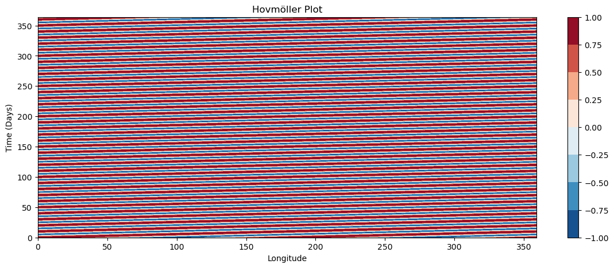
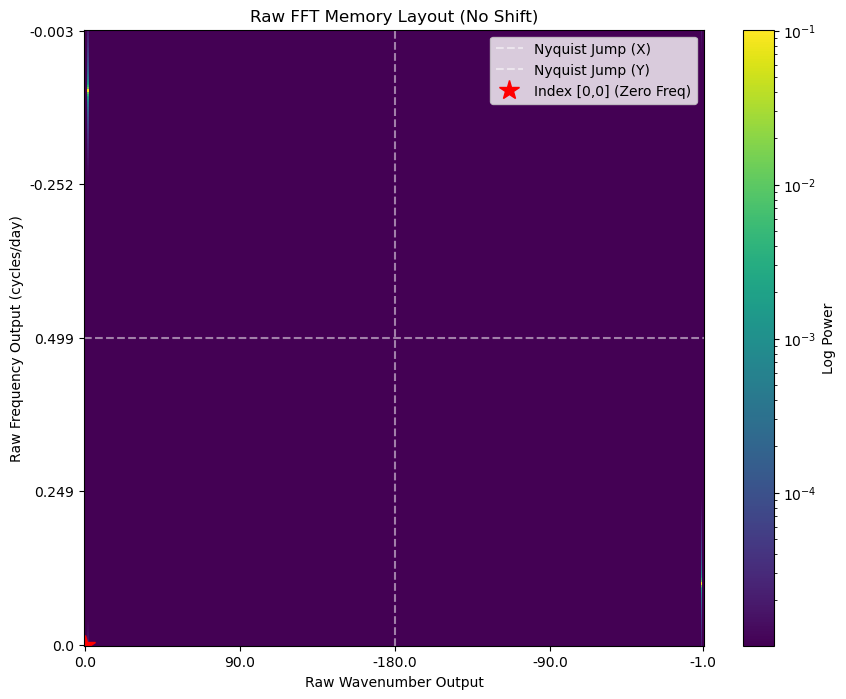
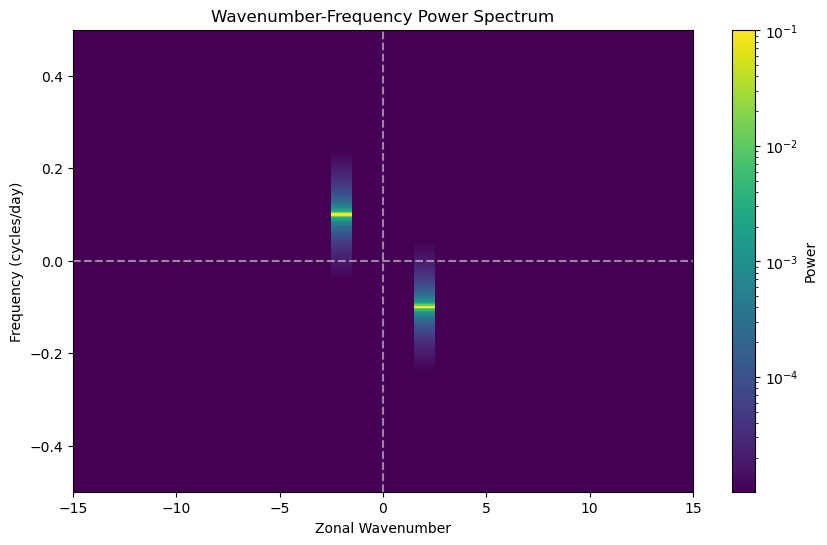
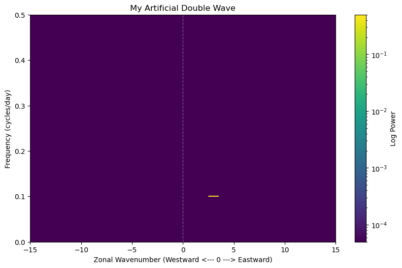

CDA6: Wavenumber-Frequency Analysis of Equatorial Waves#
This notebook introduces the theoretical foundations and practical application of wavenumber-frequency analysis, a technique pioneered by Wheeler and Kiladis (1999). This method revolutionized tropical meteorology by providing a robust way to identify and isolate equatorially trapped waves from observational data.
The Conceptual Framework#
The tropical atmosphere is fundamentally different from the mid-latitudes. Because the Coriolis force vanishes at the equator, geostrophic balance breaks down. Instead of weather systems driven by baroclinic instability (like mid-latitude fronts), the tropics are dominated by convective systems organized by large-scale, equatorially trapped waves.
These waves act like drumheads vibrating in specific, predictable patterns. They propagate horizontally along the equator but their amplitude decays rapidly as you move poleward, hence the term “equatorially trapped.”
Before 1999, these waves were mathematically predicted and occasionally spotted in station data, but isolating them globally was difficult because the atmosphere is inherently noisy. Wheeler and Kiladis realized that if you convert a long record of gridded satellite data (like cloud cover or precipitation) from the space-time domain (longitude and time) into the wavenumber-frequency domain using a 2D Fast Fourier Transform (FFT), the spectral peaks of the data align perfectly with the theoretical wave patterns predicted decades earlier.
This analysis technique thus builds on the FFT (and wavelet/EOF) lessons we covered earlier.
First of all let’s install the packages that we need
import numpy as np
import matplotlib.pyplot as plt
import xarray as xr
The Mathematical Foundation: Matsuno (1966)#
To understand where the wave curves come from, we must look at the work of Taroh Matsuno. He modeled the tropical atmosphere using the Shallow Water Equations on an Equatorial Beta Plane.
The equatorial beta plane approximation linearizes the Coriolis parameter f near the equator, setting \(f = \beta y\), where \(\beta\) is the meridional gradient of the Coriolis parameter and y is the distance from the equator.
The linearized shallow water equations without friction or forcing are:
1. Zonal Momentum: $\(\frac{\partial u}{\partial t} - \beta y v = -g \frac{\partial \eta}{\partial x}\)$
2. Meridional Momentum: $\(\frac{\partial v}{\partial t} + \beta y u = -g \frac{\partial \eta}{\partial y}\)$
3. Continuity (Mass Conservation): $\(\frac{\partial \eta}{\partial t} + H \left( \frac{\partial u}{\partial x} + \frac{\partial v}{\partial y} \right) = 0\)$
Where:
\(u\) and \(v\) are zonal and meridional velocities.
\(\eta\) is the perturbation height (like a pressure anomaly).
\(H\) is the equivalent depth of the fluid (a measure of vertical stratification).
\(g\) is acceleration due to gravity.
Matsuno assumed solutions in the form of waves propagating zonally (east-west): $\(u, v, \eta \propto e^{i(kx - \omega t)}\)$
Where \(k\) is the zonal wavenumber and \(\omega\) is the angular frequency. By substituting this wave solution into the equations and solving for the meridional boundary condition that amplitude must go to zero at the poles (\(v \rightarrow 0\) as \(y \rightarrow \pm \infty\)), Matsuno arrived at a single governing equation: the Dispersion Relation.
Non-dimensionalizing the terms yields the famous cubic equation:
Here, \(n\) is the meridional mode integer (\(n\) = 0, 1, 2…). This equation dictates exactly how fast a wave of a certain size can travel in the tropics.
Symmetry, Antisymmetry, and the Meridional Mode (\(n\))#
The integer \(n\) in Matsuno’s equation determines the structure of the wave across the equator.
Because the Coriolis force changes sign at the equator, the wave solutions are mathematically grouped into two categories based on their structure around the equator:
Symmetric Modes (\(n\) = 1, 3, 5…): The height field (\(\eta\)) and zonal wind (\(u\)) are symmetric across the equator (e.g., same sign at 10N and 10S). Equatorial Rossby (ER) waves and Kelvin waves fall into this category.
Antisymmetric Modes (\(n\) = 0, 2, 4…): The height field and zonal wind are antisymmetric across the equator (e.g., opposite signs at 10N and 10S). Mixed Rossby-Gravity (MRG) waves fall here.
The Wheeler-Kiladis Innovation: To make these theoretical waves pop out in noisy observational data, Wheeler and Kiladis separated the raw satellite data into Symmetric and Antisymmetric components before doing the FFT.
Symmetric Component = 0.5 * (Northern Hemisphere + Southern Hemisphere)
Antisymmetric Component = 0.5 * (Northern Hemisphere - Southern Hemisphere)
This brilliantly isolates the specific wave families, preventing them from bleeding together in the final power spectrum.
Artificial Dataset#
Before we start to apply the technique to real data of precipitation or OLR, we are going to invent an artificial dataset as usual, so that we “know” what the answer is and thus can validate the code.
The field will consist of a propagating cosine wave on which we will add some white noise. Let’s do this and plot the raw field.
import numpy as np
# Create artificial grid for a basic 2D FFT demonstration
nlon = 360 # 1 degree pretend resolution
ntime = 365 # like having 365 days...
lon = np.linspace(0, 360, nlon, endpoint=False)
time = np.arange(ntime)
Lon, Time = np.meshgrid(lon, time)
# Wave parameters: Wavenumber 3, Frequency 0.1 cycles/day
k_zonal = 2 ### SPACE!!!
freq = 0.1 ### TIME!!!
# Generate the field and add noise
field = np.cos(k_zonal * (Lon * np.pi / 180) - 2 * np.pi * freq * Time)
# Plot
def hovplot(field):
fig, ax1 = plt.subplots(1, 1, figsize=(14, 5))
c1 = ax1.contourf(lon, time, field, cmap='RdBu_r')
ax1.set_title('Hovmöller Plot')
ax1.set_xlabel('Longitude')
ax1.set_ylabel('Time (Days)')
fig.colorbar(c1, ax=ax1)
plt.show()
return fig,ax1 # in case you want to add anything
fig,ax=hovplot(field)

Exercises:#
2d FFTs#
We will now perform an FFT on this array, but unlike the earlier lecture where we analysed a series in 1D (e.g. time) now we perform the FFT transform in two dimensions, space and time using fft2 from the scipy fft package. There is a similar package in numpy but apparently the scipy version is faster and we also used scipy in the previous FFT lecture, so we will stick to this package for consistency.
import numpy as np
import scipy.fft as fft
import matplotlib.pyplot as plt
from matplotlib.colors import LogNorm
# Assuming 'field' and 'dt' are already defined in your current environment
ntime, nlon = field.shape
dt=1
# Compute the raw 2D FFT
field_hat = fft.fft2(field) / (nlon * ntime)
# Add 1e-12 to prevent log(0) from crashing the LogNorm mapping
power = np.abs(field_hat)**2
# Calculate the raw frequencies
wavenumbers = fft.fftfreq(nlon, d=1.0) * nlon
frequencies = fft.fftfreq(ntime, d=dt)
# Calculate dynamic limits for the LogNorm based on the actual maximum power
p_max = power.max()
p_min = p_max * 1e-4
# Create simple 1D index arrays to feed into pcolormesh
x_indices = np.arange(nlon)
y_indices = np.arange(ntime)
# Plotting
fig, ax = plt.subplots(1, 1, figsize=(10, 8))
c = ax.pcolormesh(x_indices, y_indices, power,
cmap='viridis', shading='nearest',
norm=LogNorm(vmin=p_min, vmax=p_max))
# place ticks at the start, 1/4 mark, halfway (Nyquist), 3/4 mark, and end
x_tick_idx = [0, nlon//4, nlon//2, 3*nlon//4, nlon-1]
y_tick_idx = [0, ntime//4, ntime//2, 3*ntime//4, ntime-1]
ax.set_xticks(x_tick_idx)
ax.set_xticklabels(np.round(wavenumbers[x_tick_idx], 2))
ax.set_yticks(y_tick_idx)
ax.set_yticklabels(np.round(frequencies[y_tick_idx], 3))
ax.set_title('Raw FFT Memory Layout (No Shift)')
ax.set_xlabel('Raw Wavenumber Output')
ax.set_ylabel('Raw Frequency Output (cycles/day)')
# Highlight the architecture of the raw array
ax.axvline(nlon // 2, color='white', linestyle='--', alpha=0.5, label='Nyquist Jump (X)')
ax.axhline(ntime // 2, color='white', linestyle='--', alpha=0.5, label='Nyquist Jump (Y)')
ax.plot(0, 0, 'r*', markersize=15, label='Index [0,0] (Zero Freq)')
ax.legend(loc='upper right')
fig.colorbar(c, ax=ax, label='Log Power')
plt.show()

Why an Eastward Wave appears in the Top-Left and Bottom-Right#
To understand this, we must look at how the Fourier Transform (FFT) breaks down a cosine wave into complex components and maps them to the Scipy/Numpy array indices.
The Complex Decomposition (Euler’s Formula)#
The input wave is defined as:
The FFT decomposes this into two rotating complex vectors (exponentials):
This creates two distinct signals in the FFT output with specific signs for \(k\) and \(\omega\):
Term A: \(e^{j(kx - \omega t)} \rightarrow\) Positive \(k\), Negative \(\omega\)
Term B: \(e^{-j(kx - \omega t)} = e^{j(-kx + \omega t)} \rightarrow\) Negative \(k\), Positive \(\omega\)
Mapping to Raw Array Indices#
In the raw output of fft2, indices follow the standard order: [0, Positives, Negatives]. Here is how those terms are placed:
Top-Left Signal (Term A): \(k\) is positive (first half of the X-axis), and \(\omega\) is negative (second half of the Y-axis, placed in the “top” half of the raw plot).
Bottom-Right Signal (Term B): \(k\) is negative (second half of the X-axis, placed in the “right” side of the raw plot), and \(\omega\) is positive (first half of the Y-axis, bottom of the plot).
The signal appears in the Top-Left and Bottom-Right because of the negative sign in the temporal phase of : \(\cos(kx - \omega t)\). While these “opposite” quadrants look counter-intuitive in the raw memory layout, their relationship correctly represents a constant phase moving in the positive x-direction (Eastward), we will fix this later with a flip, so Eastward is on the right.
Note: If we used \(\cos(kx + \omega t)\), the signal would jump to the Bottom-Left and Top-Right quadrants instead, but then negative \(\omega\) would be eastward. It is a matter of nomenclature and taste.
FFTshift#
fftshift performs a block swap to correct the orders and because the data is periodic (it wraps around), fftshift simply takes the arrays and rolls them so that the zero-frequency point is moved from the edges of the array directly to the center.
In a 2D array, it cuts the matrix into four equal quadrants and swaps them diagonally:
Top-Left (Quadrant 1) swaps with Bottom-Right (Quadrant 4).
Top-Right (Quadrant 2) swaps with Bottom-Left (Quadrant 3).
By doing this swap, the zero-zero point, which was at the top-left at index (0, 0) gets moved exactly to the middle of the matrix, creating the standard Cartesian coordinate system we are used to looking at.
from scipy import fft, signal
def wavenumber_freq(field,dt=1):
"""
basic wavenumber frequency calculation
-- inputs ---
field(ntime,nlon) : 2d longitude time field to analyse
dt : timestep (default = 1 unit)
"""
# Dynamically grab the grid dimensions from the input array
ntime, nlon = field.shape
# Compute 2D FFT and normalize
field_hat = fft.fftshift(fft.fft2(field)) / (nlon * ntime)
power = np.abs(field_hat)**2
# Calculate coordinates
wavenumbers = fft.fftshift(fft.fftfreq(nlon, d=1.0)) * nlon
frequencies = fft.fftshift(fft.fftfreq(ntime, d=dt))
return power, wavenumbers, frequencies
fft.fft2(field): This computes the 2-Dimensional Fast Fourier Transform. It takes the real-numbered grid of wave amplitudes and decomposes it into a grid of complex numbers. These complex numbers contain both the amplitude and the phase of every possible sine/cosine wave that can fit in the domain.
fft.fftshift(…): By default, standard FFT algorithms output the zero-frequency (the domain average) at the very first index (0, 0), with positive frequencies in the first half and negative frequencies wrapping around the back. fftshift mathematically rearranges the output array so that the zero-frequency/zero-wavenumber bin is placed exactly in the center of the array.
/ (nlon * ntime): This is the amplitude normalization. As we saw in the earlier lecture, the raw output values of a standard discrete FFT scale up with the number of grid points. By dividing by the total number of points in the 2D grid, we ensure the resulting amplitudes reflect the actual physical values of the waves, regardless of the grid resolution.
# calculate the fft and plot basic plot...
power, wavenumbers, frequencies = wavenumber_freq(field)
# Plot the Wavenumber-Frequency Spectrum
fig, ax2 = plt.subplots(1, 1, figsize=(10, 6))
# pcolormesh is usually best for spectra.
# x-axis = wavenumbers (axis 1), y-axis = frequencies (axis 0)
# c2 = ax2.pcolormesh(wavenumbers, frequencies, power, cmap='viridis', shading='nearest')
c2 = ax2.pcolormesh(wavenumbers, frequencies, power,
cmap='viridis', shading='nearest',
norm=LogNorm(vmin=p_min, vmax=p_max))
ax2.set_title('Wavenumber-Frequency Power Spectrum')
ax2.set_xlabel('Zonal Wavenumber')
ax2.set_ylabel('Frequency (cycles/day)')
# Zoom in on the axes to clearly see your generated wave (k=3, freq=0.1)
ax2.set_xlim(-15, 15)
ax2.set_ylim(-0.5, 0.5)
# Add lines for origin
ax2.axhline(0, color='white', linestyle='--', alpha=0.5)
ax2.axvline(0, color='white', linestyle='--', alpha=0.5)
fig.colorbar(c2, ax=ax2, label='Power')
plt.show()

Interpreting the output#
When we generate a wave using \(\cos(kx - \omega t)\), the 2D FFT will place the peaks at (+k, -freq) and (-k, +freq). Looking at the exponents of these two terms gives you the coordinates of the peaks in the FFT spectrum:
Term 1: Has a positive spatial component (\(+k\)) and a negative temporal component (\(-\omega\)). This gives the (+3, -0.1) peak.
Term 2: Has a negative spatial component (\(-k\)) and a positive temporal component (\(+\omega\)). This gives the (-3, +0.1) peak.
Because the input array contains purely real numbers, the Fourier transform is perfectly symmetric. Both peaks represent the exact same eastward-propagating physical wave.
So now we just need to flip the X-wavenumber axis to have eastward propagation on the right in the plot.
We will also incorportant the factor 2 scaling on the non-zero time frequencies (as we only take +ve frequencies).
import matplotlib.pyplot as plt
from matplotlib.colors import LogNorm
def plot_wk_spectrum(wavenumbers, frequencies, power,
max_wavenumber=15, max_freq=0.5,
title='Wavenumber-Frequency Spectrum'):
"""
Computes and plots a Wavenumber-Frequency (Wheeler-Kiladis style) power spectrum.
Parameters:
-----------
field : 2D numpy array
Input data with shape (ntime, nlon).
dt : float
Time step between observations in days. Default is 1.0 (daily data).
max_wavenumber : int
Maximum zonal wavenumber to display on the x-axis.
max_freq : float
Maximum frequency to display on the y-axis (cycles/day).
title : str
Title for the plot.
Returns:
--------
fig, ax : matplotlib figure and axis objects
"""
# Slice the arrays to keep ONLY positive frequencies
freq_zero_idx = len(frequencies) // 2
pos_frequencies = frequencies[freq_zero_idx:]
pos_power = power[freq_zero_idx:, :].copy()
pos_power *= 2.0 # Double power for non-zero frequencies
pos_power[0, :] /= 2.0 # Revert the zero-frequency (DC) bin
# Calculate a dynamic minimum for the LogNorm so it adapts to different datasets
p_max = pos_power.max()
p_min = p_max * 1e-4 # Show 4 orders of magnitude
print(p_min,p_max)
# Plotting
fig, ax = plt.subplots(1, 1, figsize=(10, 6))
# !!!!!!!!!!! NOTE the minus 1 !!!!!!!!!!!!!
# Multiply wavenumbers by -1 to put Eastward on the right
c = ax.pcolormesh(wavenumbers * -1, pos_frequencies, pos_power,
cmap='viridis', shading='nearest',
norm=LogNorm(vmin=p_min, vmax=p_max))
ax.set_title(title)
ax.set_xlabel('Zonal Wavenumber (Westward <--- 0 ---> Eastward)')
ax.set_ylabel('Frequency (cycles/day)')
# Set the zoom limits based on function arguments
ax.set_xlim(-max_wavenumber, max_wavenumber)
ax.set_ylim(0, max_freq)
# Add thin reference lines
ax.axhline(0, color='white', linestyle='--', alpha=0.3, linewidth=1)
ax.axvline(0, color='white', linestyle='--', alpha=0.3, linewidth=1)
fig.colorbar(c, ax=ax, label='Log Power')
plt.show()
return fig, ax
fig, ax = plot_wk_spectrum(wavenumbers, frequencies, power, title='My Artificial Double Wave')
5e-05 0.5
